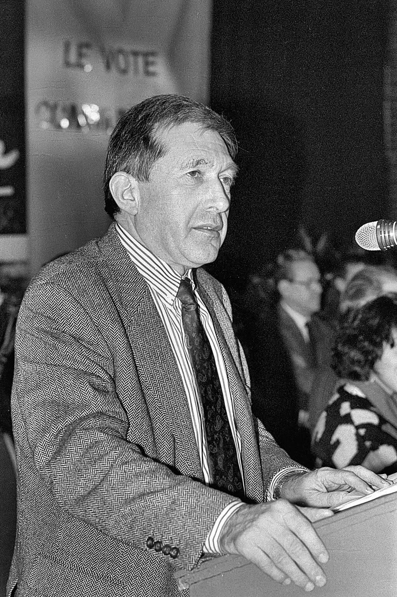

Publication relayée par le PCF 79
Les députés communistes rendent hommage à André Lajoinie
Date de mise à jour indiquée par Facebook · 28 novembre 2024
Texte de la publication · Les députés communistes
[Communiqué] C’est avec une immense tristesse que nous appris le décès d’André Lajoinie, qui fut le Président du groupe des députés communiste de 1980 à 1993.
Agriculteur de profession, il fut un grand Président de la Commission de la production et des échanges de 1997 à 2002.
A l’heure où une crise agricole frappe nos campagnes depuis de longs mois, nous nous souvenons de ses combats pour notre agriculture française.
Elu pour la première fois député de l’Allier en 1978, réélu en 1981, 1986, 1988 et 1997, les Bourbonnaises et Bourbonnais se souviennent d’un élu accessible et au plus proche de leurs préoccupations.
Les Françaises et les Français se souviennent d’un candidat à l’élection présidentielle de 1988 qui a affronté avec fermeté le candidat Jean-Marie Le Pen en septembre 1987 pour le mettre face à son passé et ses déclarations racistes et antisémites.
Là encore, son engagement politique prend une résonnance particulière aujourd’hui dans la vie politique.
Ses anciens collègues et amis se souviennent avec beaucoup de tendresse de sa gentillesse, de son souci permanent des autres, des membres du groupe et de ses collaborateurs.
Nous perdons un ami et nous voulons transmettre à sa famille et ses proches nos plus sincères condoléances.

Sources
Les députés communistes · publication relayée par le PCF 79 · bibliothèque Facebook · AR-0002-FB-01237
À lire aussi · L'élan de la Libération de Paris · Le lien d’origine